P37 当前复制反馈 · 实际 Vue
旧UI上的局部行为修复，不是C设计通过。历史问题图未覆盖；不证明真实剪贴板、权限或生产。
证据parent-old-copy-ignored / 390 current-request-copied / 390
current-request-copied / 390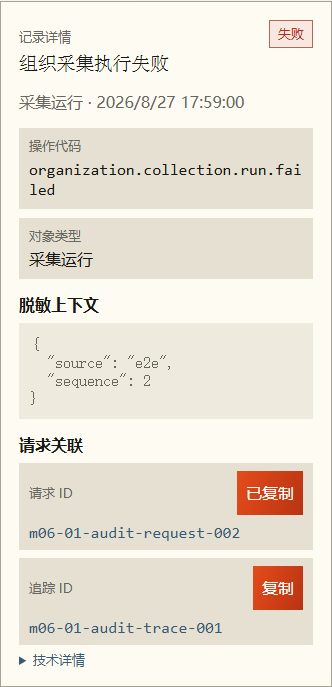
current-trace-failed / 390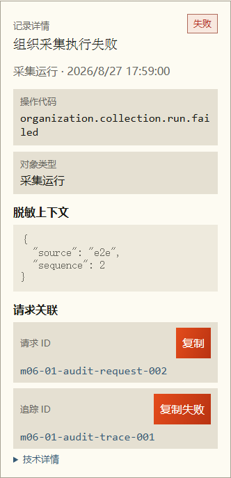
newest-copy-wins / 390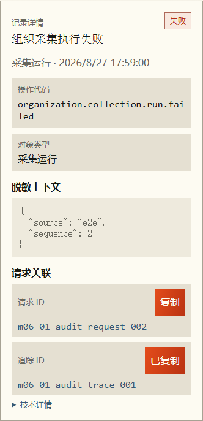
cached-return-old-copy-ignored / 390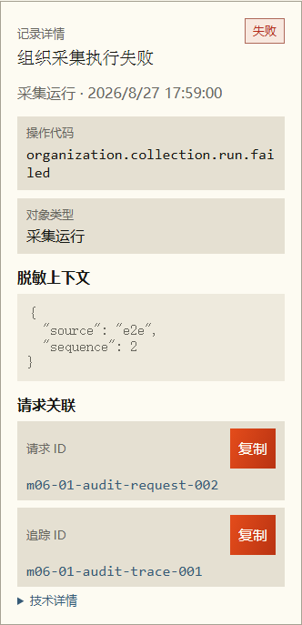
remount-old-copy-ignored / 390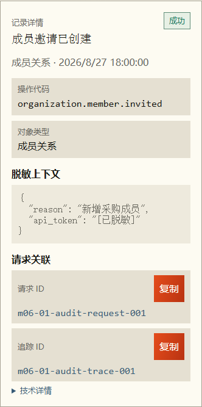
search-fallback-old-copy-ignored / 390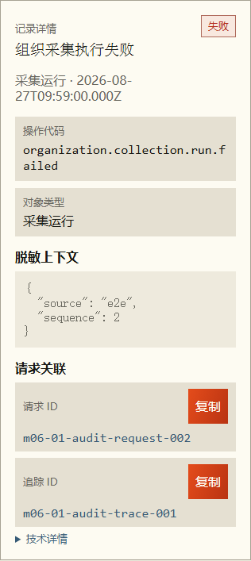
record-replacement-old-copy-ignored / 390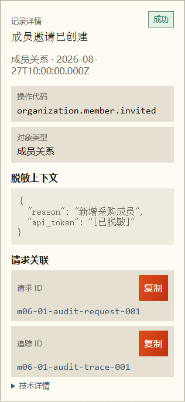
parent-old-copy-ignored / 1440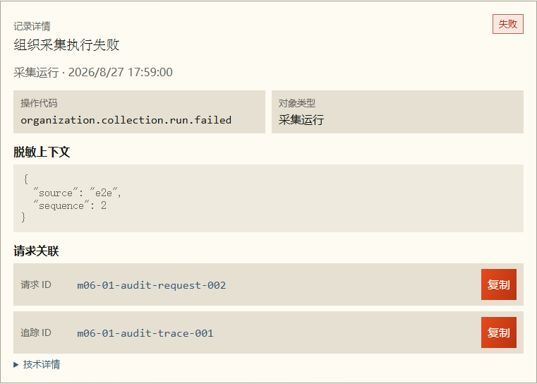
current-request-copied / 1440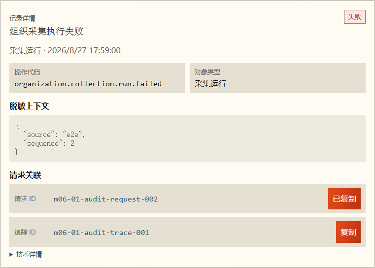
current-trace-failed / 1440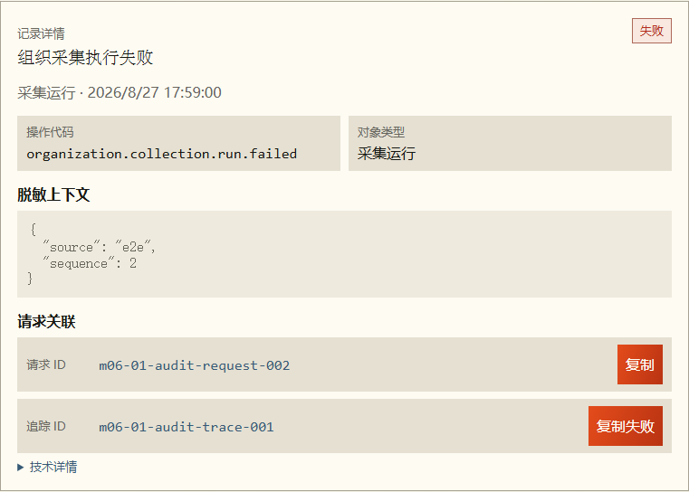
newest-copy-wins / 1440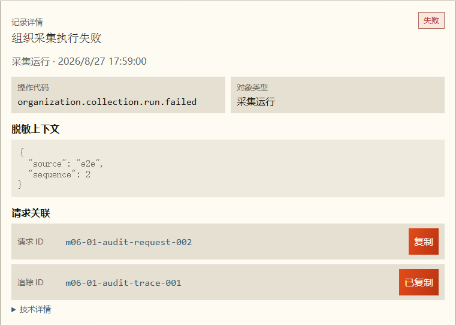
cached-return-old-copy-ignored / 1440remount-old-copy-ignored / 1440search-fallback-old-copy-ignored / 1440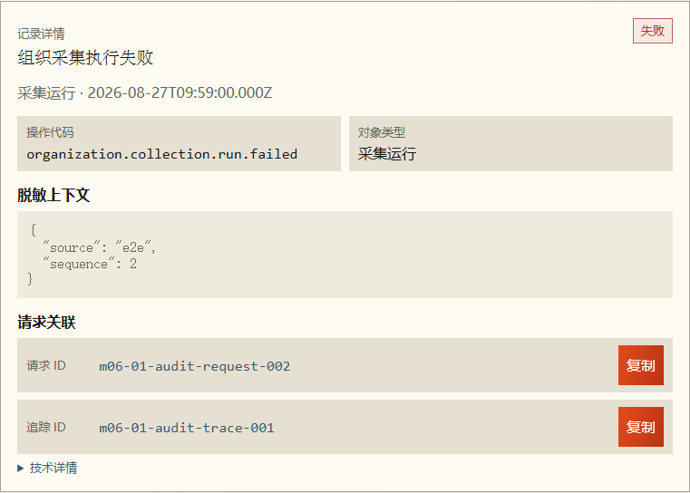
record-replacement-old-copy-ignored / 1440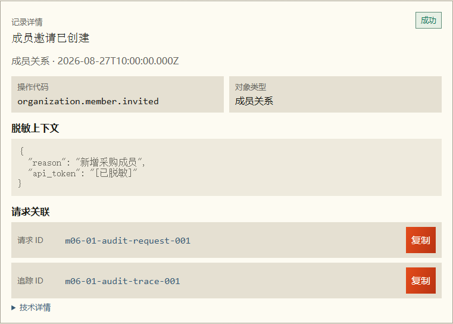